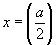

Manual do programa
Abaixo irão ser mostrados alguns exemplos de funções suportadas pelo programa e qual a formatação a utilizar.
O formato utilizado será |Representação matematica| --> |Representações validas no programa|
Constantes
e --> E
π --> pi
Polinomial
x⁵ --> x⁵ ou x**5 ou x^5
x^(1/x) --> x^(1/x) ou x**(1/x)
x^(e) --> x^E ou x**E ou x^(E)
√x --> √(x) ou sqrt(x)
√(x+3) --> √(x+3) ou sqrt(x+3)
√3(x) --> root(x, 3)
Logaritmica
log(x) --> log(x)
ln(x) --> ln(x)
ln(x-e) --> ln(x-E)
log(x-1) --> log(x-1)
log3(5) --> log(3, 5)
log17(x-5) --> log(17, x-5)
Trigonometria
sen(x) --> sen(x) ou sin(x)
cos(x) --> cos(x)
tan(x) --> tg(x) ou tan(x) ou tang(x)
cotg(x) --> cotg(x) ou cot(x)
sen(x-2) --> sen(x-2) ou sin(x-2)
sen(x²) --> sen(x²) ou sin(x**2) ou sin(x^2)
sen(√x) --> sen(√x) ou sin(√x) ou sen(sqrt(x)) ou sin(sqrt(x))
Alguns exemplos mais complexos
x^(sin(x) - 1-x²) --> x**(sin(x)-1/x**2) ou x^(sin(x)-1/x^2) ou x^(sin(x)-1/x²)
log(x⁵-2^(tg(-x-1)))+ln(x⁴-5)-2x³+5x²-sen(x)+√2 --> log(x⁵-2^(tg(-x-1)))+ln(x⁴-5)-2*x³+5*x²-sen(x)+√(2) ou
log(x**5-2**(tg(-x-1)))+ln(x**4-5)-2*x**3+5*x**2-sen(x)+sqrt(2) ou
log(x**5-2**(tg(-x-1)))+ln(x**4-5)-2*x**3+5*x**2-sen(x)+√(2)
Algumas definições
Derivada
Definição: Limite para o qual tende a razão entre o incremento da função e o incremento da variável quando o último tende para zero.
-Fonte: Grande Enciclopedia Universal Vol. 7
Integrais
Indefinidas (Primitivas)
Integral indefinida, primitiva ou derivada inversa, define-se como função primitiva de f(x) uma função F(x), tal que a sua derivada seja dF(x)/d(x) = f(x) no ramo da matematica do Calculo Diferencial
Definidas
Integral que se calcula atraves das regras de Barrow, dos quais se chamam de integrais imediatos aqueles que se podem deduzir atraves das regras da derivação.
 Alhazen Ḥasan Ibn al-Haytham
Alhazen Ḥasan Ibn al-Haytham
História do Cálculo Diferencial
Introdução
O problema de encontrar a tangente de uma curva foi estudado por vários matemáticos, dos quais se destacam Arquimedes de Siracusa, Zu Chongzhi no período chinês dos Três Reinos, Alhazen Ḥasan Ibn al-Haytham na Renascença Árabe, a matemáticos do século XVII como Newton e Leibniz. A primeira tentativa efectuada de determinar a tangente de uma curva semelhante à metodologia moderna de Cálculo, veio de Gilles Persone de Roberval, na década de 1630 a 1640, no entanto, quase na mesma altura em que Roberval desenvolvia o seu método, Pierre de Fermat usou a noção de "máxima" e de "infinitesimal" para encontrar a tangente de uma curva. Alguns historiadores creditam assim Fermat com a descoberta da derivada, mas não foi, no entanto, até Leibniz e Newton terem rigorosamente definido o seu método de tangentes, que uma técnica generalizada tornou-se amplamente aceite.
Método de Roberval de linhas tangentes usando movimento instantâneo
A ideia principal da metodologia de Roberval para determinar a tangente de uma curva consistia, em grande parte, na noção de "movimento instantâneo". Ou seja, considerando-se o desenho da curva num ponto em movimento, se, em algum ponto da curva os vetores que efectuam o movimento desta podem ser determinados, então a tangente é, simplesmente, a combinação da soma destes vetores.
Este método foi aplicado por Roberval para encontrar as tangentes de curvas para as quais ele foi capaz de determinar os vetores referentes ao movimento num ponto. Para uma parábola, Roberval conseguiu determinar estes vetores, exemplificados abaixo na figura.

Gráfico de uma parábola, mostrando o movimento dos vetores V1 e V2 num ponto P. Roberval determinou que num ponto P de um parábola, existem dois vetores que indicam o valor do seu movimento instantâneo, V1, que está na mesma direção da semi-reta SP, focando-se na parábola no ponto S e o ponto P, sendo V2, por sua vez, o indicador do movimento instantâneo perpendicular ao eixo y, e diretriz da interseção da parábola. A tangente do gráfico no ponto P é simplesmente a soma dos vetores V = V1 + V2.
Desta forma, Roberval foi capaz de encontrar as tangentes de numerosas outras curvas incluindo elipses e ciclóides, no entanto, encontrar os vetores de movimento instantâneo num ponto mostrou-se difícil para um grande número de curvas, além disso, Roberval nunca foi capaz de explicitar o funcionamento deste método logicamente e, por essa razão, existe historicamente apenas como o percursor do método de encontrar tangentes com o auxílio dos infinitesimais, desenvolvidos por Edwards mais tarde.
Máxima e Tangente de Fermat
O processo para localizar a tangente foi desenvolvido em 1630 por Pierre De Fermat. Este nunca foi, no entanto, rigorosamente formulado e assemelha-se aos métodos utilizados por Newton e Leibniz, mantendo-se assim o conceito formal de limite desconhecido. Fermat não foi capaz de justificar propriamente o seu trabalho, porém, ao examinar as suas metodologias, é aparente que este compreendia com grande dominio, o método usado para diferenciar na actualidade.
De modo a compreendê-lo, é preciso em primeiro lugar, entender a técnica utilizada para encontrar a máxima. O seu primeiro problema documentado em diferenciação, envolve encontrar a "máxima" de uma equação, ficando aparente que esta descoberta que permitiu desenvolver o seu método de cálculo de tangentes.
O problema consistia em dividir um segmento de reta em dois, de modo a que o produto destes fosse um máximo.
Uma reta de tamanho 'a' é dividida em dois segmentos, ('x' e '(a-x)') e maximiza-se o produto x (a - x). Na altura, este método era de certa forma abstrato, devido à falta do conceito atual de limite, mas na atualidade, tendo este em mente, o processo revela-se relativamente simples de compreender. Fermat substitui cada valor de 'x' com 'x + E' e estipula que quando a máxima é encontrada, 'x' e 'x + E' são iguais. Obtendo assim a equação:
x(a - x) = (x + E)(a - x - E)
Através da simplificação de ambos os membros da equação e cancelamento de termos, Fermat reduziu-a para:

Feito isto, atribui-se a E o valor de 0, ficando assim com:
Isto indica que para maximizar o produto de dois segmentos, cada comprimento das semi-retas deve ser metade do total tamanho da reta, apesar deste resultado ser correto, o método contém varias lacunas de informação que só podem ser retificadas pelo conhecimento atual. Fermat limita-se a assumir que E = 0, o que nos casos em que acontecem divisões por E, ocorrem divisões por zero. No entanto, quando este assumia que E = 0, sem se aperceber considerava o limite de E quando este tende para zero (que explica a razão do seu raciocínio algébrico funcionar). O Método dos Extremos de Fermat, pode também ser compreendido em termos modernos, ao substituir 'x + E' por 'x', dizendo assim que 'f(x+E) = f(x)', ou que 'f(x+E) - f(x) = 0'. Assumindo que 'f(x)' é polinomial, esta expressão será divisível por E. Logo, o método de Fermat pode ser visto como a definição de derivada (quando usada para encontrar a extrema):
Apesar de Fermat nunca ter feito uma explicação concisa da sua metodologia, o seu trabalho pode ser interpretado como a definição do cálculo diferencial.
Usando o seu E "misterioso", Fermat descobriu ainda um método de encontrar a reta tangente em curvas. Vejamos a seguinte parábola.
 Pierre de Fermat
Pierre de Fermat
Fermat quis encontrar a fórmula para uma tangente de f(x). Para tal, este desenha a reta tangente no ponto x e considera um ponto de E distância. Através da semelhança de triângulos, a seguinte relação existe:
Ao isolar 's', reparou que:
Seguidamente, sendo E = 0 (em termos modernos, Fermat usou o limite de E tendendo para 0) reconheceu que a parte inferior da equação era equivalente à derivada do seu método da mínima. Consequentemente, para encontrar a inclinação de uma curva, é apenas necessário encontrar f(x)/s. Consideremos a equação:

Novamente, sendo E=0 concluimos que:
Agora voltando à equação original:

Aqui a notação moderna de derivada f'(x), que Fermat reconhecia como [f(x+E) - f(x)]/E quando E=0, é utilizada. Deste modo, foi capaz de formular a regra geral para a reta tangente de uma função, desenvolvendo assim a regra geral para diferenciação e integração polinomial, no entanto, este nunca se apercebeu da relação inversa que existe entre as duas operações, e devido a inconsistências lógicas na justificação da sua metodologia, este ficou em grande parte esquecido. Não foi até Newton e Leibniz que tal deixou de ocorrer.
Newton e Leibniz
 Isaac Newton
Isaac Newton
Newton e Leibniz resolveram três dos grandes problemas que surgiram na história do desenvolvimento do Cálculo Diferencial. Primeiro, através das técnicas de diferenciação e integração, que já tinham sido previamente descobertas, estes foram os pioneiros na explicação do "processo algébrico" para cada operação. Em segundo lugar, apesar do facto da diferenciação e integração já ter sido descoberta por Fermat, Newton e Leibniz reconheceram a sua utilidade como um processo generalizado, isto é, antes de Newton e Leibniz terem considerado soluções para os problemas da área e tangente como soluções específicas para problemas particulares, previamente, ninguém tinha reconhecido a utilidade do cálculo diferencial como uma ferramenta generalizada. Finalmente, através do reconhecimento da diferenciação e integração como processos inversos, Newton e Leibniz foram os primeiros a pronunciar tal veracidade de forma explícita, e a provar tal com rigor.
Ambos abordaram os problemas do cálculo com notações e metodologias diferentes, e na parte final da sua vida, disputaram incessantemente por quem era o verdadeiro responsável pela descoberta e formulação do cálculo diferencial, acusando-se um ao outro de plágio. Apesar de nomes como Newton e Leibniz estarem associados com a invenção do cálculo, como já dito anteriormente, o processo teria sido iniciado por outros. Entretanto, a generalização de técnicas e demonstração explícita do Teorema Fundamental do Cálculo não se demonstrou uma simples tarefa, apesar de ser semelhante aos seus antecessores em algumas das suas metodologias usadas.
As Inversas Elusivas – a Integral e a Derivada
A notação de Leibniz assemelha-se mais com aquela usada no cálculo moderno, e o seu processo de descoberta da relação inversa entre integrais e derivadas será examinada. Apesar de Newton ter chegado independentemente à mesma conclusão, o seu método de descoberta é um pouco menos acessivel.
Leibniz define a derivada como "é"
Das publicações inicias de Cavalieri, Leibniz já se encontrava familiarizado com as técnicas de encontrar a área debaixo de uma curva, este descobriu a relação inversa entre a área de uma derivada ao utilizar a sua definição de diferencial.
Considere o gráfico da equação y = x2+1:
Leibniz teve a ideia de utilizar a diferencial na área da função do gráfico, considerando adicionar a D (a área) abaixo o gráfico da curva, D é definido pelo menor retângulo de PQRS onde a área é y(D x) com a adição de uma fração do retângulo superior SRUT cuja área é simplesmente D x(D y), ou seja, D fica entre y(D x) e o retângulo PQUT que o encapsula, cuja área é (y + D y)(D x). Leibniz depois considerou a relação D (area)/ D x e verificou que uma vez que D (área) encontra-se entre y(D x) e (y + D y)(D x) a relação será assim entre y e (y + D y). Pelo diagrama, pode ser visto que D x e D y estão relacionados entre si, ou seja, quando D x tende para 0, D y também tende para 0, tal indica que D (area)/ D x encontra-se entre 'y' e um valor que se aproxíma de y (visto que y + D y se aproxíma de y de forma a que D y tende para 0), escrito agora em termos da definição de derivada de Leibniz:
Leibniz mostrou a relação inversa entre a derivada e a área da função, nomeadamente, que a derivada da área de uma função y, é igual à própria função. Neste caso, a derivada da área da função y = x2+1 é nomeadamente y=x2+1
A influência de Leibniz na história do cálculo integral espalhou-se muito além do facto deste ter-se apercebido desta relação revolucionária, sendo ainda responsável por inventar a notação matemática que é utilizada pela maior parte dos estudantes de cálculo nos dias de hoje. Leibniz utilizou o símbolo 'ò' que era apenas a forma utilizada para escrever "S" na altura, de modo a denotar um número infinito de somas. Isto estava diretamente relacionado com o que ele chamava de "integral", ou a soma de um número de áreas infinitamente pequenas. A área debaixo da função y, ou integral de y, era expressa como òy (dx).
Na realidade esta notação estava a indicar que devia ser efetuada a soma de todas as áreas de dx * y quando dx tende para 0. À maneira que dx se aproxima de 0, existe um número infinito destas áreas, vindo assim o símbolo ò representar um número infinito de somas. Este tipo de integração hoje em dia, é chamado de integral indefinida ou derivada inversa, devido à relação inversa que existe entre estas como descoberto por Leibniz. Isto é, a derivada de uma integral indefinida dá-nos a própria função. Além disso, este desenvolveu ainda a notação das integrais definidas, integrais que produzem uma área abaixo de uma curva entre dois valores que a limitam "a" e "b". A notação consistia em embutir os valores "a" e "b" no símbolo da integral como representado abaixo:
Sendo A a área associada à função produzida pela integral indefinida, a área A foi obtida através da Lei de Wallis.
História do Cálculo Integral
Introdução
A história da descoberta da técnica moderna de integração, começou com a tentativa do desenvolvimento de um método para o encontro da área debaixo de uma curva, as fundações para a descoberta da integral foram primeiro implantadas por Cavalieri, matemático italiano do século XVII, o seu trabalho focou-se, principalmente, no facto de que uma curva pode ser esboçada ao mover um ponto e uma área de acordo com o movimento de uma reta.
Método das Indivisíveis de Cavalieri
De forma a desenvolver a notação geométrica de um ponto em movimento, Cavalieri trabalhou no conceito que chamou de "indivisíveis", isto é, se um ponto em movimento pode ser usado para esboçar uma curva, Cavalieri passou a definir a curva resultante como a soma dos seus pontos, sendo assim, cada curva é, por consequência, composta por um número infinito de pontos, ou "indivisíveis", que por sua vez compõem também uma área com um número infinito de linhas, Cavalieri, no entanto, não foi o primeiro matemático a considerar figuras geométricas em termos infinitesimais, tendo sido precedido por Kepler, que foi o primeiro a utilizar tal noção no cálculo de áreas.
Quanto ao método, começamos por encontrar a área de um triângulo. Previamente, sabia-se que a área de um triângulo era ½ da área de um retângulo com a mesma base e altura.
O retângulo com base de 6 unidades e altura de 5 unidades (A = bh, com área total de 30 unidades), sendo que a área total do retângulo interno pode ser facilmente calculada através da soma de todos os retângulos internos, comparando agora as duas áreas:
Usando a mesma metodologia, o rácio do rectângulo com maior número de subdivisiões internas é calculado:
A área total das regiões internas é sempre ½ da área do retângulo completo, tal pode ser demonstrado usando o somatório para o numerador como demonstrado abaixo:
 Johannes Kepler
Johannes Kepler
Usando a forma simplificada, nota-se que:

Cavalieri utilizou de seguida a sua noção de "indivisiveis" para imaginar a existência de um número infinito de regiões sombreadas, este notou que estas regiões ficaram pequenas o suficiente para serem consideradas linhas, as extrusões mostravam-se suficiente uniformes de forma a que fosse possívelç ser visualizada uma linha. A maneira que isto acontece, a região sombreada começa a formar um triângulo, e a maneira que esta região sombreada aumenta, o rácio mantém-se simplesmente ½.
Esta metodologia encontra-se em concordância com a forma clássica de que a área de um triângulo equivale a ½ do produto da base pela altura. Mostrou ainda que a sua noção de indivisiveis pode ser usada para demonstrar a área debaixo de uma curva, isto é, a maneira que as areas dos retângulos se transformam em linhas, a sua soma produz a area existente debaixo de uma curva. Este método foi utilizado para calcular uma grande variedade de curvas, no entanto, este nunca documentou a sua técnica de forma consistente tendo a causa desta ser rejeitada por grande parte dos outros matemáticos do seu ramo. Apesar destas metodologias demonstradamente funcionarem não foi até John Wallis que o limite foi em 1656 introduzido e a fundação do cálculo integral solidificado.
De forma a entender as contribuições de Wallis para o cálculo integral, é necessario analisar primeiro as técnicas teoricas de Cavalieri aplicando-as para encontrar a área debaixo de uma curva com maior complexidade, para tal, será demonstrado o caso de uma parábola
Cada região retangular tem base de 1 unidade relativamente ao eixo das abcissas e altura de x2 (obtida através da definição de parábola). Definindo o número de regiões retangulares por 'm', Cavalieri tenta uma vez mais, expressar a área debaixo de uma curva como o rácio de uma área já conhecida, considerando a área encapsulante de todos os rectângulos m, pode ser visto no diagrama que a base deste rectângulo equivale a m+1 (existem m rectângulos, começando o primeiro a ½ e acabando o último a m + ½), a altura do retângulo encapsulante será m2, recorrendo a definição da parabola, o rácio pode agora ser expressado pela equação:

Relembrando agora que a área de um retângulo é definida pelo produto da sua base e altura, pode ser afirmado que o retângulo encapsulante tem m+1 na sua base e m2 na sua altura, relativos ao denominador, quanto ao numerador cada um dos m retângulos tem 1 de base e altura do seu valor de x². Cavalieri procede a calcular o rácio para os diferentes valores de m, e ao fazê-lo notou um padrão que lhe permitiu ser capaz de establecer uma fórmula para a razão das áreas:
Cavalieri procedeu a utilizar os seus "indivisíveis" para fazer outra descoberta no ramo do cálculo, e notou que à medida que m ficava maior, o termo tinha cada vez menos influência no resultado final do cálculo, em termos atuais, temos que:
Ou seja, de forma a que o número de retângulos tende para infinito, o rácio das áreas aproxima-se de . Apesar disto, Cavalieri nunca formalizou qualquer noção de limite, mas utilizou o conceito no cálculo de áreas. Depois de usar o conceito de infinito para descrever as proporções da área, Cavalieri conseguiu formular uma expressão algébrica para a área abaixo da parábola. Para qualquer distância x ao longo do eixo x, a altura da parábola seria o dobro. Portanto, a área do retângulo que encerra as subdivisões retangulares em um ponto x era igual a  ou o seu triplo. De seu resultado anterior, a área abaixo da parábola é igual a 1/3 da área do retângulo delimitador. Em outras palavras:
ou o seu triplo. De seu resultado anterior, a área abaixo da parábola é igual a 1/3 da área do retângulo delimitador. Em outras palavras:
Com este metodo, Cavalieri tomou os primeiros passos face ao desenvolvimento da integração.
Lei da Integração Polinomial de Wallis
A contribuição de John Wallis para o cálculo integral foi desenvolver uma lei algébrica de integração que reduziu a necessidade de analisar cada curva. Examinando a relação entre a função e a função que descreve a própria área (denominada função da área da curva), conseguindo também desenvolver uma lei algébrica para determinar as funções da área. Em vez de simplesmente apresentar a relação algébrica.
Consideremos o gráfico da função y = k ou :
Como podemos observar no diagrama, a área abaixo da linha em qualquer ponto ao longo das abcissas será kx ou  . Consideremos agora o gráfico da função y = kx:
. Consideremos agora o gráfico da função y = kx:
Em qualquer ponto x ao longo do eixo das abcissas, a altura será igual a kx. Como a área forma um triângulo, a área abaixo da curva pode ser expressa como ½ do produto da base pela altura ou  . Como já foi mostrado acima, a área abaixo de uma parábola y = kx2 pode ser expressa como
. Como já foi mostrado acima, a área abaixo de uma parábola y = kx2 pode ser expressa como  . Wallis apercebeu-se da relação algébrica entre uma função e a função da área associada. Ou seja, a função de área de é
. Wallis apercebeu-se da relação algébrica entre uma função e a função da área associada. Ou seja, a função de área de é  . Wallis demonstrou que isto não só é verdadeiro onde n é um número natural (como observado por Cavalieri), mas também funcionava com expoentes negativos e fracionários. Wallis também mostrou que a área abaixo de um polinómio composto por termos com diferentes expoentes (por exemplo,
. Wallis demonstrou que isto não só é verdadeiro onde n é um número natural (como observado por Cavalieri), mas também funcionava com expoentes negativos e fracionários. Wallis também mostrou que a área abaixo de um polinómio composto por termos com diferentes expoentes (por exemplo,  ) pode ser calculada usando sua lei em cada um dos termos independentemente.
) pode ser calculada usando sua lei em cada um dos termos independentemente.
Abordagem de Fermat à Integração
Uma das mais comuns aplicações de séries infinitas no desenvolvimento do cálculo, veio do método de integração de Pierre De Fermat. Embora métodos anteriores de integração tivessem usado a noção de linhas infinitas que descrevem uma área, Fermat foi o primeiro a usar séries infinitas na sua metodologia. O primeiro passo envolvia descrever unicamente os retângulos infinitos que compõem a área sob uma curva.
Fermat notou que, dividindo a área abaixo de uma curva em retângulos sucessivamente menores à medida que x se aproximava de zero, uma infinidade de retângulos ilustrariam a área com precisão. Escolhendo um valor 0 < e < 1, de modo a que se forme um retângulo abaixo da curva  em cada potência de e vezes x (Note que e =/= 2,71828…). Fermat então calculou cada área individualmente:
em cada potência de e vezes x (Note que e =/= 2,71828…). Fermat então calculou cada área individualmente:
A primeira equação representa a área do maior retângulo, a segunda equação o próximo retângulo à esquerda e assim por adiante. As áreas são simplesmente encontradas multiplicando a base pela altura. A base é conhecida pelo potência de e, e pela altura, avaliando  no valor x fornecido. As simplificações de cada expressão de área são fornecidas de uma forma que será útil ao tentar encontrar a soma infinita. O próximo passo de Fermat foi calcular a soma infinita desses retângulos à medida que a potência de e se aproximava do infinito.
no valor x fornecido. As simplificações de cada expressão de área são fornecidas de uma forma que será útil ao tentar encontrar a soma infinita. O próximo passo de Fermat foi calcular a soma infinita desses retângulos à medida que a potência de e se aproximava do infinito.
Ao determinar a soma de cada série finita crescente, Fermat foi capaz de desenvolver uma expressão para a soma infinita. Para encontrar uma fórmula simplificada para a expressão
...note que a soma é uma série geométrica da forma:
Se 0 < x < 1, a soma é (isto pode ser verificado ao dividir (1-x) por 1). Portanto, substituindo novamente por x e inserindo na equação geral, a área pode ser expressa como:
Fermat agora desejava expressar a área inteiramente em termos de x, e para fazê-lo substituiu , que por simplificação e fatoração (1-E):
Fermat agora deu um passo que, com o conhecimento atual, é explicável, mas que na altura devido à falta do conceito de limite, poderia parecer ilógico ou incompreensível. Ou seja, Fermat disse que se E = 1 e desde que e porque  então e também deve ser igual a 1. Substituindo 1 por E em a expressão da área acima:
então e também deve ser igual a 1. Substituindo 1 por E em a expressão da área acima:
Embora esta metodologia tenha produzido o resultado apropriado para a área abaixo da curva, a justificação de Fermat dizer que E = 1, não foi formulada adequadamente. O que ele realmente estava fazendo era tomar o limite quando E tende para 1 e quando E tende para 1, e também tende para 1. À medida que e se aproxima de 1, então e elevado a qualquer potência também tende para 1, e a soma infinita das áreas abaixo da curva foi determinada. A noção de limite foi sugerida no trabalho de Fermat, mas não foi formalmente definida até mais tarde.
O trabalho de Wallis e Fermat lançou as bases para o conceito moderno de integral. No entanto, o que Fermat e Wallis não reconheceram foi a relação entre a derivada e o integral. Esta idéia seria desenvolvida simultaneamente por dois homens: Newton e Leibniz. Mais tarde, isto seria conhecido como Teorema Fundamental do Cálculo e, como o nome indica, é uma descoberta marcante na história do Cálculo.